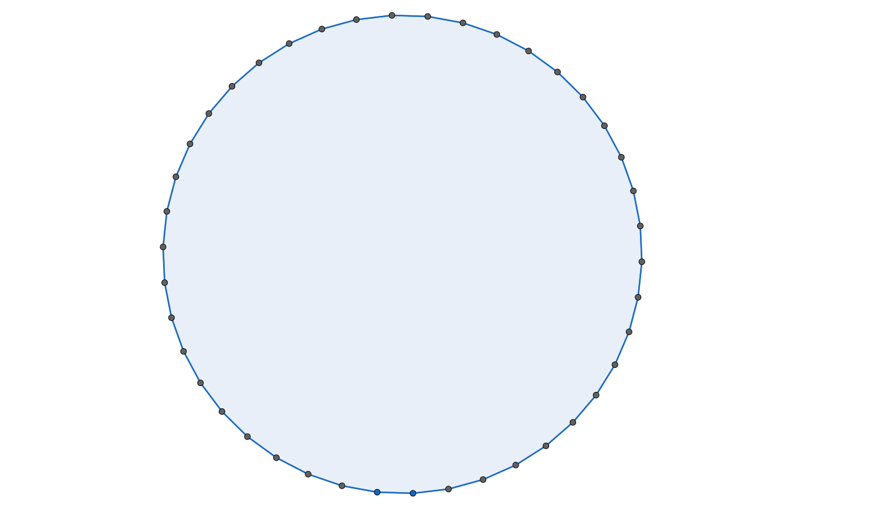
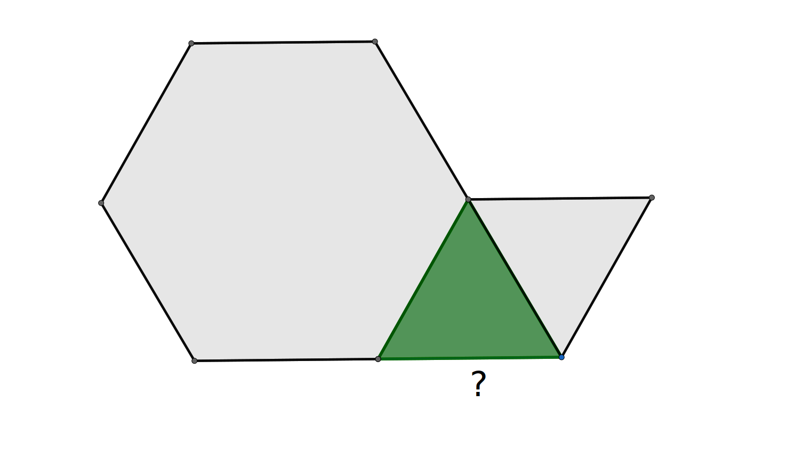

Have you ever studied a tiling of a floor or a pattern on a quilt? In this section, we will define a regular polygon and explore when regular tilings can be used to tile the plane.
Subsection2.4.1Regular Polygons
We begin by defining what it means for a polygon to be regular.
Definition2.4.1.
A polygon is a regular polygon if all of its sides and all of its angles are congruent.
Explain why each shape below is not a regular polygon:
Subsection2.4.2Regular Tilings
In the very first activity, we created a tiling of a square using tetrominoes. In this section, we will consider tilings of the plane. Since the plane continues infinitely, we will not be able to fully create a tiling, but we will be able to build enough of the tiling to determine whether a tiling is possible.
Definition2.4.3.
A tiling is a collection of closed polygons that cover a plane (continuing infinitely in all directions) with no gaps and no overlaps. A monohedral tiling is tiling that uses only one shape, a regular tiling is a monohedral tiling using a single regular polygon as its tile. In a regular tiling, each side of a polygon will line up perfectly with a side of an adjacent copy.
Exploration2.4.1.Regular Tilings.
This activity may be completed using physical tiles or in an app. Be sure to save a record of your designs by tracing, photography, or screenshots. Some of the computations will also be used later in this section. You are encourage to keep an accessible record of your work for future reference.
The web application Polypad by Mathigon 1 provides regular \(n\)-gons for \(3\leq n\leq 8\text{.}\) These are the top six shapes in the Polygons and Shapes menu. Simply drag the shape from the left into the whiteboard area. Rotate using the black dot and move by clicking on the interior. For \(n\)-gons with \(n>8\text{,}\) use the hexagon labeled "regular" in the bottom rom of shapes. After you have moved this figure into the whiteboard, use the dotted vertex to increase the number of sides. You can then use the duplicated sheet icon on the flip/cut/... menu to make copies of your \(n\)-gon.
(a)
Select a single regular polygon, making copies of it as needed, and use it to construct a regular tiling. Construct enough of the tiling to convince others that the tiling can continue to tile the plane with no gaps and overlaps.
(b)
Experiment with equilateral triangles, squares, regular pentagons, regular hexagons, and other regular \(n\)-gons to determine which can be used to create a regular tiling and which do not. What do you think will happen with regular polygons with more than eight sides? Why?
(c)
Perhaps you noticed that the vertex angle measure places a role in determining whether a regular polygon can be used to create a regular tiling. This task will lead you to determine the measure of the vertex angle of a regular pentagon. We will use this technique to find the measure of the vertex angles for other regular n-gons.
What is \(m\angle 1 + m\angle 4 + m\angle E\text{?}\)
Use the fact that the pentagon is divided into triangles to determine \(m\angle EAB+m\angle B+m\angle BCD+m\angle CDE
+m\angle E\text{.}\)
Having just computed the sum of the five congruent angles of a regular pentagon, determine \(m\angle A\text{.}\)
Some of what you found, but not all, will be true for all convex pentagons. What results about angle measure will also hold for non-regular convex pentagons? What will be different?
(d)
Use your work from the previous task to complete the row for regular pentagon in the table below. Repeat this procedure for squares, regular hexagons, regular octagons, and regular decagons, drawing diagonals from a single vertex to dissect the polygon into triangles, using the triangles to determine the total vertex angle measure, and then determining the measure of each angle. In the final row, \(n\) is a variable representing the number of sides and the answers will be algebraic expressions involving the variable \(n\text{.}\)
Table2.4.5.Angles of Regular Polygons
shape
number of sides
number of triangles
total angle measure
single vertex measure
triangle
3
1
180
60
square
4
regular pentagon
5
regular hexagon
6
regular octagon
8
regular decagon
10
regular \(n\)-gon
\(n\)
(e)
Returning to the question of when a regular polygon can be used to create a regular tiling,
How many equilateral triangles can meet at a single point?
How many squares can meet at a single point?
How many regular hexagons can meet at a single point?
Explain in words and pictures why these three regular polygons can each produce a regular tiling.
When we tried to surround a point with regular pentagons a gap was formed. What is the degree measure of that gap?
If \(n\geq 7\text{,}\) do you know whether a regular \(n\)-gon might produce a regular tiling? Include a discussion of vertex angle measure in your explanation.
Subsection2.4.3Semiregular Tilings
If we allow more than one regular polygon to be used in a tiling, we may are able to create a wider variety of designs.
Definition2.4.6.
A semiregular tiling is a tiling consisting of two or more regular polygon with common side lengths with the additional requirement that the arrangement of polygons around each vertex is the same.
Exploration2.4.2.In Search of Semiregular Tilings.
Once again, you are encouraged to continue the practice of saving your sketches, work, and results as they may be useful later in this section.
(a)
What must be true about the measures of the angles of the vertices meeting at and surrounding a single point?
The sum of the angle measures must be 360 degrees.
(b)
In Table 2.4.5, you determined the vertex angle measure for a few regular polygons and developed a general formula for finding this measure. Use the formula, to determine the vertex angle measure of each of the following regular \(n\)-gons. If the answer is not a whole number, write the answer as a mixed number.
The measure of the vertex angle of a regular \(n\)-gon is given by the formula \(d=\frac{180(n-2)}{n}\text{.}\)
(c)
Figure2.4.7.A 3.3.4.3.4 vertex arrangement.
The vertex arrangement pictured is denoted \(3.3.4.3.4\) (triangle, triangle, square, triangle, square).
Verify that the sum of the angles meeting at the vertex is 360 degrees.
Extend the \(3.3.4.3.4\) design making sure that you always have one or two triangles between any two squares. Will this eventually fill the plane without gaps or overlaps?
Note that \(3.3.3.4.4\) gives a different pattern. Show that it is possible to create a tiling using the vertex arrangement \(3.3.3.4.4\) by building outward from your initial vertex arrangement.
(d)
Verify arithmetically that it is possible for an equilateral triangle, a regular heptagon, and a regular tetracontakaidigon (pictured below), to fit snugly around a vertex with no overlaps. In shorthand, we can write this vertex arrangement as \(3.7.42\text{.}\)

Figure2.4.8.A tetracontakaidigon (42-gon).
(e)
Use the angle measures you found in Table 2.4.5 and Task 2.4.2.b to list all combinations of three, four, or five regular polygons that could meet at a vertex, writing the vertex configurations in shorthand notation. Like the example in Task 2.4.2.c, the same shape may be repeated. If more than three polygons meet at a vertex, consider the different ways in which they could be arranged.
We are not including the three regular tilings in this list. There is one more vertex arrangement using five polygons (in addition to 3.3.4.3.4 and 3.3.3.4.4), five using four polygons, and eight more using three polygons (in addition to 3.7.42).
(f)
Some of the vertex arrangements in the previous task will extend to create a semiregular titling, but not all of them! Experiment by surrounding one vertex using the pattern and then try to surround the neighboring vertices using the same arrangement. Which seem to work and which fail? For the ones that fail, what seems to go wrong?
Only eight of the seventeen possible vertex arrangements can be used to create a semiregular tiling.
(g)
What do you notice about the vertex arrangements that work (or those that don’t work)? What do you wonder?
This activity may have involved more of a struggle that some of the others. Perhaps you only found about half of the possibilities in Task 2.4.2.e or you cannot yet see a pattern to help determine which vertex arrangements lead to a semiregular tiling. That is perfectly normal. Write down the ideas that you do have and share them with classmates. As you share what you have observed and listen to others’ discoveries, you and your classmates may uncover some amazing results.
Subsection2.4.4Narrowing Down the Options
When we look at possible vertex arrangements for a semiregular tiling, our options are very limited. Not including the regular tiling by squares, you should have found three groups of four regular polygons with an angle sum of 360 degrees. All of these have at least one polygon appearing twice. Why do some of these extend to a semiregular tiling while others do not? Does it matter whether the common polygons are next to each other or separated?
As we attempt to create a 3.3.6.6 pattern, we find that it is impossible to maintain a consistent vertex arrangement. Fairly quickly, we are forced to create a 3.6.3.6 arrangement at some vertices. On the other hand, a 3.3.6.6 vertex arrangement can continue indefinitely. Let us explore why this happens.
Exploration2.4.3.Semiregular Tilings with Four Regular Polygons at a Vertex.
(a)
Use physical or virtual triangles and hexagons to sketch the vertex arrangement 3.3.6.6 or refer to an earlier sketch if available.
Choose one of the two triangles at this vertex and attempt to surround it with triangles and/or hexagons while adhering to the 3.3.6.6 arrangement.
Note that each triangle in a 3.3.6.6 must share a side with one triangle and one hexagon due to the order of the 3’s and 6’s. https://www.geogebra.org/geometry/bvquvkpn

Figure2.4.9.Surrounding a regular triangle with regular triangles and regular hexagons.
Will the remaining side abut a triangle or a hexagon? Discuss what happens in each case.
(b)
There is a second group of four regular polygons consisting of two equilateral triangles and two other polygons.
What are the other two polygons? We will represent the number of sides of these polygons by \(m\) and \(n\text{.}\)
Explain why the arrangement \(3.3.m.n\) will not extend to a semiregular tiling using an argument similar to what we did with \(3.3.6.6\text{.}\)
Explain why the arrangement \(3.m.3.n\) also fails to create a semiregular tiling.
(c)
The remaining semiregular tiling with four polygons meeting at each vertex has two squares and two other polygons in the vertex arrangement.
What are the other two polygons? Again, the number of sides of these two polygons are represented by \(m\) and \(n\) in the questions that follow.
Are you able to surround a square along its sides by an alternating sequence of \(m\)-gons and \(n\)-gons?
One of the polygons has an odd number, \(m\text{,}\) of sides. Are you able to surround the \(m\)-gon along its sides by an alternating sequence of squares and \(n\)-gons?
Explain in words and pictures why \(m.4.n.4\) extends to a semiregular tiling, but \(m.4.4.n\) does not. Draw a sketch of \(m.4.n.4\) if you do not already have one.
We conclude that there are only two semiregular tilings and one regular tiling of the plane where four polygons meet at a vertex. All three vertex arrangements with five polygons meeting extend to semiregular tilings. To complete this analysis, we consider which three-polygon vertex arrangements extend to a semiregular tiling.
Exploration2.4.4.Semiregular Tilings with Three Regular Polygons at a Vertex.
(a)
Not including the regular tiling \(6.6.6\text{,}\) there are nine possible vertex arrangements consisting of three regular polygons. List as many as you can, referring back to the work you did in Task 2.4.2.e.
(b)
Verify algebraically that \(5.5.10\) can surround a single point.
(c)
Use the fact that 5 is an odd number to explain why \(5.5.10\) does not extend to a semiregular tiling. You may include pictures as well as words in your explanation.
(d)
Determine the three vertex arrangements with three polygons that extend to a semiregular tiling. Why must the others be eliminated?
Subsection2.4.5Summary and Tools
As we conclude this long section, it is wise to reflect on what we have learned. What should we add to our tool box for later use? Definitions for regular polygons, tilings, regular tilings, and semiregular tilings were introduced at the beginning of the section. You should also note the items below:
What formula can be used to compute the angle measure for a regular \(n\)-gon?
What is the sum of the measures of the vertex angles for any (not-necessarily regular) convex \(n\)-gon? For example, the measures of the angles of any triangle add up to 180 degrees. What is the total for a convex quadrilateral, a convex pentagon, etc.?
Describe the three regular tilings.
If a group of polygons meet at a single vertex, what must be the sum of the angle measures at that vertex? Note that this wording generalizes this fact to nonregular polygons as well.
Just because a collection of regular polygons can surround a vertex does not mean that they can create a semiregular tiling. Give an example of a vertex arrangement that does not extend to a regular tiling. Support your claim.
Exercises2.4.6Exercises
Skills and Recall
1.
Sketch a picture of each of the following:
A rectangle that is a regular quadrilateral.
A rectangle that is not a regular quadrilateral.
2.
What is the total angle measure of each of the following?
Demonstrate that each of the following exist by sketching an example:
a pentagon that is not convex
a convex hexagon with at least one right angle
4.
Demonstrate that each of the following exist by sketching an example:
an equilateral polygon that is not regular
an equiangular polygon that is not regular
5.
Answer the following:
What is the measure of each vertex in a regular 18-gon?
What is the measure of each vertex in a regular 9-gon?
If a regular 18-gon, a regular 9-gon, and an equilateral triangle meet at a vertex, will there be a gap? an overlap? or will they fit together without gaps or overlaps?
Explain why it is impossible to create a semiregular tiling using regular 18-gons, regular 9-gons, and equilateral triangles.
6.
Explain why the following are not semiregular tilings: